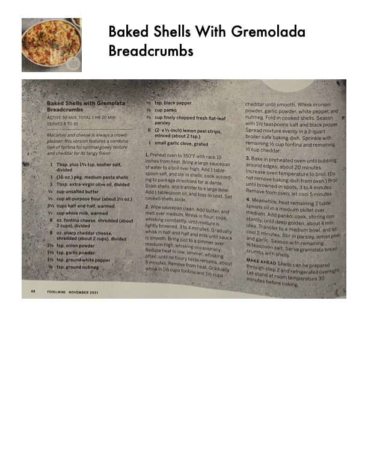

Baked Shells with Gremolata Breadcrumbs

Original cookbook page 256
Macaroni and cheese featuring a combination of fontina for optimal gooey texture and cheddar for tangy flavor, topped with herb-lemon breadcrumbs.
Prep: 50 minutes • Cook: 30 minutes • Total: 1 hr 20 minutes
Ingredients
- 1 Tbsp. plus 1½ tsp. kosher salt, divided
- 1 (16-oz.) pkg. medium pasta shells
- 3 Tbsp. extra-virgin olive oil, divided
- ¼ cup unsalted butter
- ½ cup all-purpose flour (about 1¾ oz.)
- 2½ cups half-and-half, warmed
- ½ cup whole milk, warmed
- 8 oz. fontina cheese, shredded (about 2 cups), divided
- 8 oz. sharp cheddar cheese, shredded (about 2 cups), divided
- 1¼ tsp. onion powder
- 1¼ tsp. garlic powder
- ¼ tsp. ground white pepper
- ⅛ tsp. ground nutmeg
- ½ tsp. black pepper
- ¼ cup panko
- ¼ cup finely chopped fresh flat-leaf parsley
- 6 (2- x ½-inch) lemon peel strips, minced (about 2 tsp.)
- 1 small garlic clove, grated
Instructions
- Preheat oven to 350°F with rack 10 inches from heat. Bring a large saucepan of water to a boil over high. Add 1 tablespoon salt, and stir in shells; cook according to package directions until al dente. Drain shells, and transfer to a large bowl. Add 1 tablespoon oil, and toss to coat.
- Wipe saucepan clean. Add butter, and melt over medium. Whisk in flour; cook, whisking constantly, until mixture is lightly browned, 3 to 4 minutes. Gradually whisk in half-and-half and milk until sauce is smooth. Bring just to a simmer over medium-high, whisking occasionally. Reduce heat to low; simmer, whisking often, until no floury taste remains, about 5 minutes.
- Remove from heat. Gradually whisk in 1½ cups fontina and 1½ cups cheddar until smooth. Whisk in onion powder, garlic powder, white pepper, and nutmeg. Fold in cooked shells. Season with 1½ teaspoons salt and black pepper. Spread mixture evenly in a 2-quart broiler-safe baking dish. Sprinkle with remaining ½ cup fontina and remaining ½ cup cheddar.
- Bake in preheated oven until bubbling around edges, about 20 minutes. Increase oven temperature to broil. (Do not remove baking dish from oven.) Broil until browned in spots, 3 to 4 minutes. Remove from oven; let cool 5 minutes.
- Meanwhile, heat remaining 2 tablespoons oil in a medium skillet over medium. Add panko; cook, stirring constantly, until deep golden, about 4 minutes. Transfer to a medium bowl, and let cool 2 minutes. Stir in parsley, lemon peel, and garlic. Season with remaining ½ teaspoon salt. Serve gremolata breadcrumbs with shells.
Recipe #256 from collection